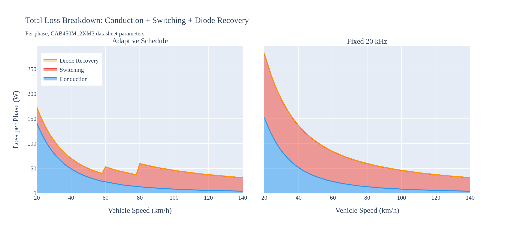
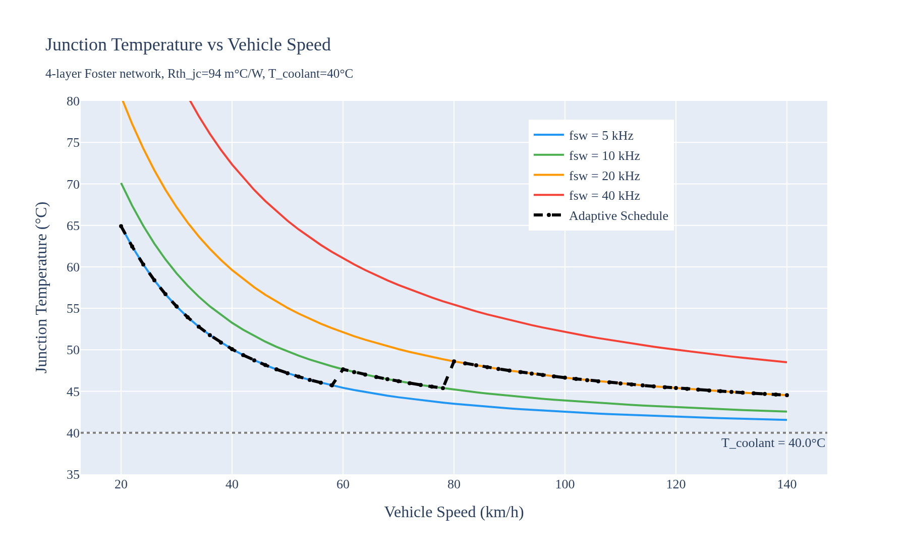

Abstract—This paper presents a comprehensive design, simulation, and loss optimization of a Three-Level Flying Capacitor (3L-FC) inverter for an 800V Electric Vehicle (EV) traction application. The selection of the FC topology over the Neutral Point Clamped (NPC) alternative is detailed, highlighting advantages in thermal symmetry and natural balancing. Component selection criteria for 1200V SiC modules and high-ripple film capacitors are established based on industry standards. A detailed conduction and switching loss analysis was conducted utilizing the Graovac-Purschel analytical method and datasheet parameters from a commercial 1200V, 450A SiC module. Results show that an adaptive switching frequency schedule yields a 75% reduction in switching losses during high-current urban driving compared to a fixed 20 kHz baseline. Full time-domain simulations validate the design, demonstrating successful natural capacitor balancing, proper pre-charge handling, excellent output waveforms, and safe thermal operation.
I. INTRODUCTION
The rapid evolution of Electric Vehicles (EVs) is driving a shift from traditional 400V to 800V DC bus architectures. This transition enables faster charging times, reduced cable weight, and higher overall system efficiency [1]. However, the increased DC link voltage presents significant challenges for the traction inverter, primarily concerning semiconductor voltage ratings, electromagnetic interference (EMI), and the dv/dt stress imposed on motor windings [2].
Traditional two-level voltage source inverters (2L-VSI) require semiconductor devices with blocking voltages of at least 1200V. While Silicon Carbide (SiC) MOSFETs meet this requirement, their fast switching speeds exacerbate dv/dt stress, leading to premature motor insulation failure [3]. Multilevel inverters offer a compelling solution by synthesizing the output voltage from multiple discrete levels, inherently reducing the voltage step size and improving the harmonic profile.
II. TOPOLOGY SELECTION: FC VS. NPC
When designing a three-level traction inverter for an 800V EV architecture, the two primary candidates are the Neutral Point Clamped (NPC) and the Flying Capacitor (FC) topologies. A rigorous comparative analysis dictates the selection of the FC topology for this application based on several critical factors unique to EV traction [4].
A. Thermal Symmetry and Component Count
A major disadvantage of the NPC topology is the unequal distribution of conduction and switching losses among its semiconductor devices. The outer switches in an NPC inverter process different current profiles than the inner switches, leading to asymmetric thermal stress. This complicates cooling system design and degrades long-term reliability [5]. In contrast, the FC topology distributes voltage and current stresses symmetrically across all four switches in a phase leg. Every switch blocks exactly half the DC bus voltage (Vdc/2), allowing the use of identical power modules throughout the design. Furthermore, the FC topology eliminates the need for the clamping diodes required in the NPC, removing components from the conduction path and thereby reducing overall conduction losses [6].
B. Dynamic Load Balancing
EV traction drives are characterized by highly dynamic, rapidly fluctuating load profiles. The NPC topology relies on the neutral point of the DC-link capacitor bank, which is notoriously difficult to keep balanced under transient conditions or varying power factors without injecting complex zero-sequence voltage commands [5]. The FC topology, however, utilizes redundant switching states to naturally balance the flying capacitor voltage. By actively selecting between redundant states based on the phase current direction, the flying capacitor remains balanced at Vdc/2 regardless of the load power factor, making it highly robust for EV drive cycles.
C. Trade-offs and Mitigations
The primary drawback of the FC topology is the requirement for bulky, high-voltage capacitors in each phase leg, which add volume and cost compared to the NPC [4]. Additionally, a dedicated pre-charge circuit is required at startup to prevent catastrophic overvoltage across the inner switches. However, in modern EV architectures, pre-charging contactors are already mandated for the main DC-link, and advancements in automotive-grade film capacitors have significantly reduced the volume penalty, making the FC topology highly viable.
III. COMPONENT SELECTION
The physical components were selected based on rigorous automotive industry standards to ensure reliability under the 800V architecture.
A. Semiconductor Switches
The Wolfspeed CAB450M12XM3 SiC half-bridge power module was selected for the active switches. The 1200V blocking rating provides a mandatory 50% safety margin over the 800V nominal bus (400V per switch in the 3L-FC configuration) to withstand transient spikes. The 450A continuous current rating provides a robust 3.3x margin over the worst-case peak urban phase current (136A), accounting for transient overloads, high-temperature derating, and safe operating area (SOA) constraints [7]. SiC technology was chosen over Silicon IGBTs due to its order-of-magnitude lower switching energy and absence of tail current, enabling the high switching frequencies (up to 20 kHz) required for high-speed motor operation without prohibitive thermal losses.
B. Flying Capacitors
The flying capacitor (Cfc) must be sized to maintain voltage ripple within a 5% budget (20V on a 400V reference) under the worst-case operating condition, which occurs at maximum current and minimum switching frequency. Using the sizing equation C = Ipk / (2 * fsw_min * ΔVfc), with Ipk = 136A, fsw_min = 5 kHz, and ΔVfc = 20V, the required capacitance is 680 μF. Automotive-grade metallized polypropylene film capacitors (e.g., TDK EPCOS or KEMET C4AQ series) are specified due to their exceptionally low Equivalent Series Resistance (ESR < 5 mΩ), high ripple current capability (>100A RMS), and self-healing properties, which are critical for the reliability of the FC topology [8].
IV. VEHICLE ARCHITECTURE AND OPERATING POINTS
To accurately model inverter losses and performance, the electrical operating points must be mapped from the vehicle's mechanical state. The test vehicle architecture is defined by an 800V DC bus, a single-speed reduction gear (ratio G = 8.19), a tyre radius (r) of 0.315 m, and an 8-pole Permanent Magnet Synchronous Motor (pole pairs p = 4).
A. Speed to Frequency Mapping
The fundamental electrical frequency (fe) required by the motor is directly proportional to the vehicle speed (v, in m/s):
fe = (v / r) * (G / 2π) * p
Urban driving (40 km/h) requires a relatively low electrical frequency of 184 Hz, while highway cruising (120 km/h) demands 552 Hz.
B. Current Profile Constraints
The inverter was modeled driving an RL load (R=1.3Ω, L=2mH). Because the load impedance increases with frequency, the peak phase current (Ipk) is inversely proportional to vehicle speed. Urban driving represents the highest current stress (136 A at 40 km/h), while highway driving draws significantly less current (51 A at 120 km/h).
V. COMPREHENSIVE LOSS ANALYSIS
To quantify the efficiency impact of the drive frequency, the industry-standard analytical method proposed by Graovac and Purschel [9] was utilized alongside detailed parameters from the CAB450M12XM3 datasheet.
A. Datasheet Parameter Extraction
The analytical model was calibrated using the following parameters from the selected Wolfspeed CAB450M12XM3 module:
- Rds_on: 3.3 mΩ at 25°C, scaling linearly to 6.6 mΩ at 175°C.
- Switching energies (at Iref = 450A, Vref = 600V): Eon = 25.4 mJ, Eoff = 7.51 mJ, Err = 0.2 mJ.
- Thermal impedance: Rth_jc = 0.094 °C/W (per switch position), modeled as a 4-layer Foster network.
B. Conduction and Switching Loss Formulation
Conduction loss is temperature-dependent and scales with the square of the RMS current. The switching energy of SiC MOSFETs scales approximately linearly with commutated current and voltage. By integrating the switching energy over a sinusoidal current half-wave, the average switching power loss per phase (Psw) for a 3-level inverter can be expressed as:
Psw = Nc * (fsw / π) * Esw_ref * (Ipk / Iref) * (Vdc_sw / Vref)
Where Nc is the number of switches commutating per PWM transition (Nc = 2 for 3L-FC), Esw_ref is the datasheet reference switching energy at Iref and Vref, and Vdc_sw is the voltage blocked by the switch (Vdc/2 = 400V).


C. Loss vs. Frequency Analysis
Fig. 1 and Fig. 2 illustrate the conduction and switching losses, respectively, across the vehicle speed range. Conduction loss is heavily dependent on junction temperature, exhibiting a 2x increase from 25°C to 175°C. Switching loss scales linearly with the carrier frequency (fsw). At a fixed 20 kHz, switching losses dominate at low speeds (urban driving) due to the high phase currents (136A).
D. Adaptive Switching Frequency Schedule
The results reveal that operating at a fixed 20 kHz carrier frequency is severely sub-optimal for urban driving. At 40 km/h, the high phase current combined with a 20 kHz switching frequency generates 84.3 W of switching loss per phase. However, because the fundamental frequency at 40 km/h is only 184 Hz, a 20 kHz carrier is unnecessary. An adaptive schedule was implemented, reducing the carrier frequency to 5 kHz during urban driving (yielding a safe modulation ratio mf = 27) and increasing to 20 kHz only at highway speeds where fundamental frequencies exceed 500 Hz.
| Metric | Urban (40 km/h) | Highway (120 km/h) |
|---|---|---|
| Electrical Freq (fe) | 183.9 Hz | 551.7 Hz |
| Peak Current (Ipk) | 135.8 A | 51.0 A |
| Fixed 20kHz Sw. Loss | 84.3 W/phase | 31.7 W/phase |
| Scheduled Sw. Loss | 21.1 W/phase (5kHz) | 31.7 W/phase (20kHz) |

As detailed in Table I and Fig. 3, the adaptive schedule yields a massive 75% reduction in switching losses during urban driving, equating to a saving of nearly 190 W (3-phase) at 40 km/h.
VI. TIME-DOMAIN SIMULATION RESULTS
To validate the operational stability of the design, a full time-domain simulation was constructed in Python using the datasheet-calibrated parameters.
A. Output Waveforms and THD
The inverter successfully synthesized the three-level output voltage. Fig. 4 shows the resulting phase current waveforms, and Fig. 5 shows the output voltage waveforms. The Total Harmonic Distortion (THD) of the phase current, calculated using a Hanning-windowed FFT, was excellent: 1.92% for the urban segment (5 kHz) and 1.13% for the highway segment (20 kHz).


B. Flying Capacitor Balancing and Pre-Charge
A critical operational requirement is the pre-charging of the 680 μF flying capacitor to prevent severe overvoltage across the inner switches at startup. The simulation incorporates a 20ms pre-charge sequence, linearly ramping Vfc to 400V before active PWM switching commences. As shown in Fig. 6, the PD-PWM balancing algorithm maintained the flying capacitor voltage exceptionally well, with a mean error of less than 0.04V from the 400V reference and a simulated urban ripple of 18.0V (matching the analytical 20V budget).

C. Thermal Analysis
The thermal performance of the CAB450M12XM3 module was evaluated using the 4-layer Foster network derived directly from the datasheet transient thermal impedance curves. With the adaptive switching frequency schedule, the maximum junction temperature reached only 46.4°C (assuming a 40°C ambient/coolant base), providing a massive 128.6°C margin to the module's 175°C limit. Fig. 7 shows the junction temperature profile across the speed range, confirming that the selected module and adaptive frequency strategy provide exceptional thermal reliability.

VII. CONCLUSION
This paper demonstrated that traction inverter design and optimization cannot be conducted in isolation from the vehicle architecture. The 3L-FC topology was selected over the NPC alternative due to its superior thermal symmetry and natural balancing capabilities under dynamic EV loads. Component selection was rigorously justified using industry standards for 800V architectures. By mapping mechanical vehicle speed to inverter electrical parameters, a comprehensive loss profile was generated using the Graovac-Purschel analytical method and CAB450M12XM3 datasheet parameters. Implementing a speed-adaptive switching frequency schedule reduced urban switching losses by 75%, saving 190 W (3-phase) while maintaining excellent FC voltage balancing, low THD (<2%), and safe thermal operation. This approach significantly improves overall drivetrain efficiency where EVs spend the majority of their operational life.
References
[1] T. Modeer et al., "Multilevel Inverters for EV Traction Applications: A Review," IEEE Transactions on Transportation Electrification, 2020.
[2] "A Closer Look at Multilevel Traction Inverters," Charged EVs, 2023.
[3] Texas Instruments, "EV Traction Inverter Design Priorities," Whitepaper SPRAD58B.
[4] S. Elbadaoui et al., "Choice between three-level NPC and FC topology under SVM control," EPJ Web of Conferences, vol. 330, 2025.
[5] Infineon Technologies, "Comparative analysis of 3-level topologies," Knowledge Base Article, Sept. 2025.
[6] L. M. Tolbert, "Multilevel Inverters for Large Automotive Electric Drives," Oak Ridge National Laboratory.
[7] Wolfspeed, "CAB450M12XM3 1200V, 450A SiC Half-Bridge Module Datasheet," Rev. 3, June 2024.
[8] TDK EPCOS, "Capacitors for DC Link and Flying Capacitor Applications," Product Guide.
[9] D. Graovac and M. Purschel, "IGBT Power Losses Calculation Using the Data-Sheet Parameters," Infineon Application Note AN 2009-05, Jan. 2009.